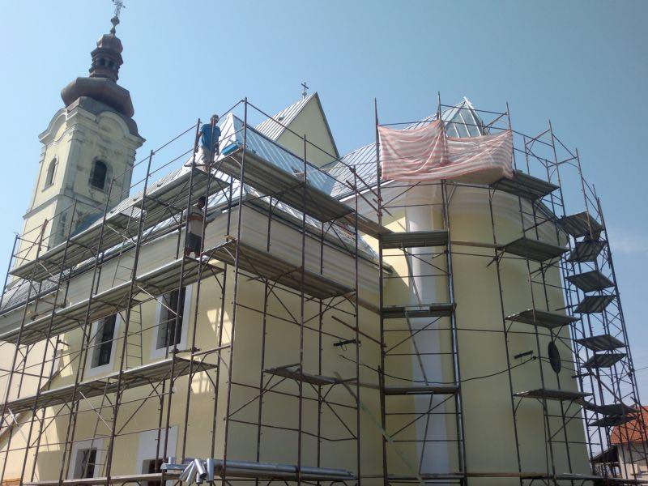

Naslovnica / Radovi
Galerija izvedenih radovaKrovovi koje smo napravili.
Samo neki od objekata na kojima smo izvodili radove. Kliknite fotografiju za povećanje, a strelicama se krećite kroz galeriju.
Sakralni objekti
Obnova katedrale u Bjelovaru i župne crkve u Garešnici: krovišta, limarija i radovi na tornjevima. Radili smo i na obnovi crkve u Tomašici, crkve u Nevincu i kapelice u Sasovcu.
Gerard pokrovi
Pokrivanje i sanacija krovišta Gerard pokrovom, od letvanja do krovnih prozora i opšava dimnjaka.
Limeni pokrovi i obloge
Limeni pokrovi od profiliranog lima, obloge i sanacije ravnih i kosih krovova.
Građevinska limarija
Oluci, opšavi dimnjaka, krovne kućice, uvale i sljemena iz našeg pogona.
Tesarski radovi i sjenice
Drvena krovišta, nadstrešnice, vrtne kućice i sjenice s limenim pokrovom.
Bravarski radovi
Metalne konstrukcije nadstrešnica i ograde.
Proizvodi od lima
Elementi i proizvodi po narudžbi iz naše radionice.
Hale i poslovni objekti
Hale obložene limenim panelima, poslovne zgrade i radovi na višekatnicama.